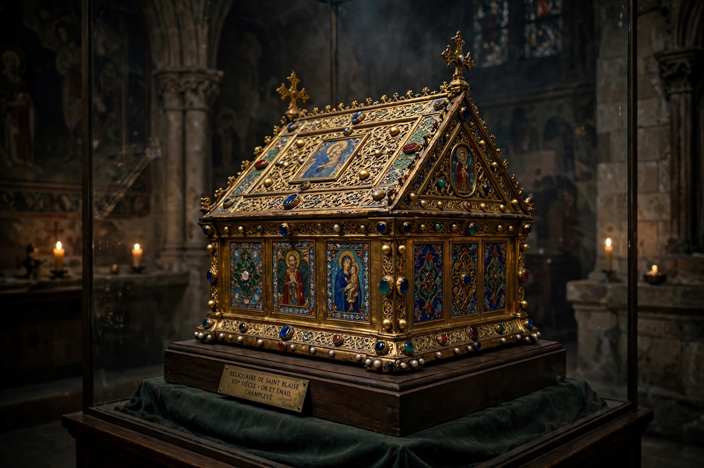

| Relic | |
|---|---|
 A medieval reliquary | |
| Type | Sacred object of religious veneration |
| Traditions | Christianity, Buddhism, Islam, Hinduism, others |
In religion, a relic is an object or article of religious significance from the past. It usually consists of the physical remains of a saint or the personal effects of the saint or venerated person preserved for purposes of veneration as a tangible memorial. Relics are an important aspect of many religions, including Buddhism, Catholic and Orthodox Christianity, Hinduism, Islam, and shamanic traditions.
The Roman Catholic Church classifies relics into three classes: first-class relics are parts of a saint's body or items directly associated with the life of Christ; second-class relics are items owned or used by a saint; third-class relics are objects touched to a first- or second-class relic. The veneration of relics was a defining feature of medieval piety: shrines such as those housing the Crown of Thorns in Paris or the relics of St James at Santiago de Compostela drew pilgrims across Europe. The Fourth Lateran Council (1215) and the Council of Trent (1563) regulated their authentication amid a flourishing — and often fraudulent — trade in relics, criticized by reformers such as John Calvin, who mocked duplicate relics in his Treatise on Relics (1543).
According to tradition, the cremated remains (śarīra) of the Buddha were divided among eight kingdoms and enshrined in stupas; the emperor Ashoka is said to have redistributed them into 84,000 stupas across his empire. The Temple of the Tooth in Kandy, Sri Lanka, houses the relic of the tooth of the Buddha, one of Buddhism's most sacred objects. Sites such as Sanchi preserve relics of the Buddha's disciples, and stupas and pagodas across Asia were built as reliquary monuments.
Relics attributed to the Prophet Muhammad — including hairs, teeth, footprints, his cloak (khirqa), and standard — are preserved notably in the Topkapi Palace in Istanbul and are venerated by many Muslims, though some movements regard the practice as impermissible innovation.
Categories: Relics · Christian practices · Buddhist practices